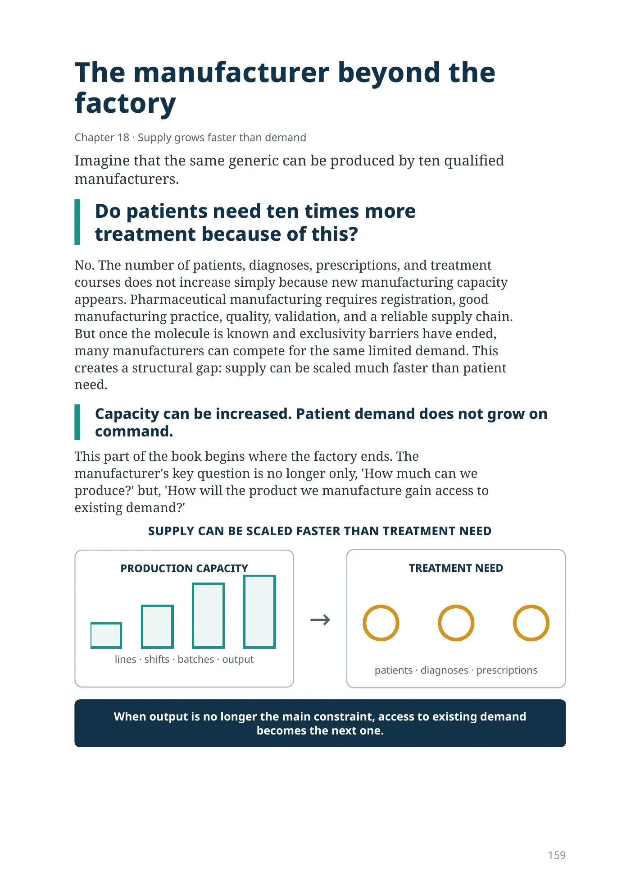
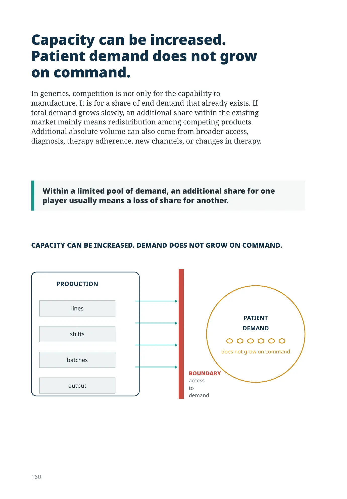
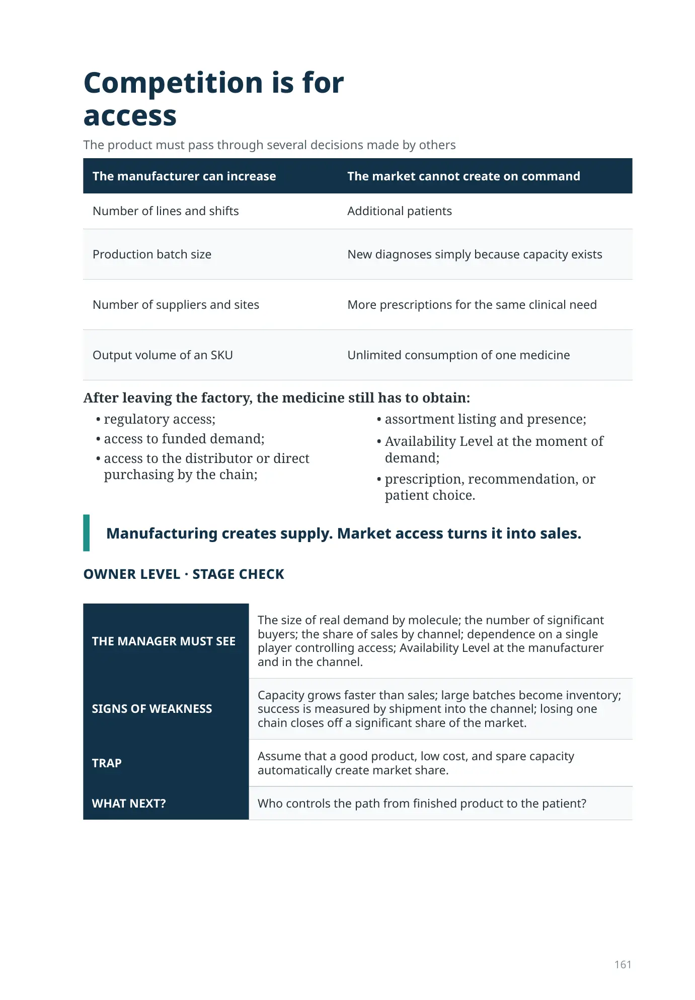

The manufacturer beyond the factory
Chapter 18 · Supply grows faster than demand
Imagine that the same generic can be produced by ten qualified manufacturers.
Do patients need ten times more treatment because of this?
No. The number of patients, diagnoses, prescriptions, and treatment courses does not increase simply because new manufacturing capacity appears. Pharmaceutical manufacturing requires registration, good manufacturing practice, quality, validation, and a reliable supply chain. But once the molecule is known and exclusivity barriers have ended, many manufacturers can compete for the same limited demand. This creates a structural gap: supply can be scaled much faster than patient need.
Capacity can be increased. Patient demand does not grow on command.
This part of the book begins where the factory ends. The manufacturer's key question is no longer only, 'How much can we produce?' but, 'How will the product we manufacture gain access to existing demand?'
Capacity can be increased. Patient demand does not grow on command.
In generics, competition is not only for the capability to manufacture. It is for a share of end demand that already exists. If total demand grows slowly, an additional share within the existing market mainly means redistribution among competing products. Additional absolute volume can also come from broader access, diagnosis, therapy adherence, new channels, or changes in therapy.
Within a limited pool of demand, an additional share for one player usually means a loss of share for another.
DEMAND
Competition is for access
The product must pass through several decisions made by others
| The manufacturer can increase | The market cannot create on command |
|---|---|
| Number of lines and shifts | Additional patients |
| Production batch size | New diagnoses simply because capacity exists |
| Number of suppliers and sites | More prescriptions for the same clinical need |
| Output volume of an SKU | Unlimited consumption of one medicine |
After leaving the factory, the medicine still has to obtain:
- regulatory access;
- access to funded demand;
- access to the distributor or direct purchasing by the chain;
- assortment listing and presence;
- Availability Level at the moment of demand;
- prescription, recommendation, or patient choice.
Manufacturing creates supply. Market access turns it into sales.
OWNER LEVEL · STAGE CHECK
| THE MANAGER MUST SEE | The size of real demand by molecule; the number of significant buyers; the share of sales by channel; dependence on a single player controlling access; Availability Level at the manufacturer and in the channel. |
|---|---|
| SIGNS OF WEAKNESS | Capacity grows faster than sales; large batches become inventory; success is measured by shipment into the channel; losing one chain closes off a significant share of the market. |
| TRAP | Assume that a good product, low cost, and spare capacity automatically create market share. |
| WHAT NEXT? | Who controls the path from finished product to the patient? |